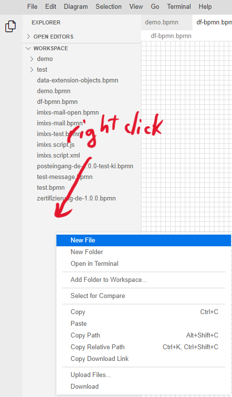
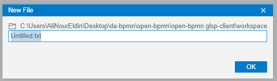
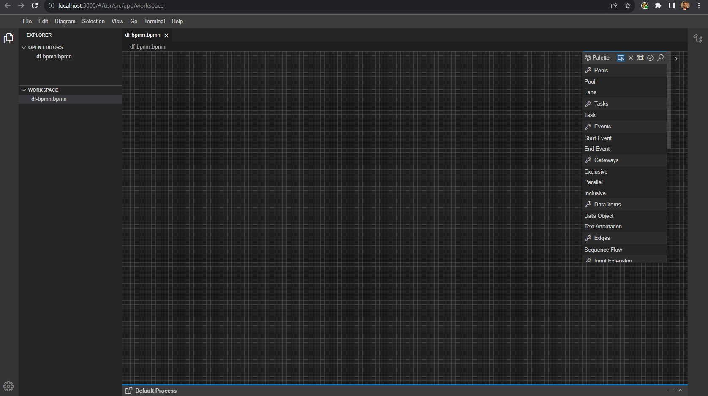

You can build and install all of the environments manually or use the Docker version for a quick and easy system.
Here, we will illustrate how to install the DF-BPMN tool using Docker image:
- Download docker application and create account.
- Go to your terminal/cmd then run: docker pull alinoureldin/df-bpmn:latest
-
Before run the next command you should:
- Change <openai-key> in the next command (you was received by email).
- Change the <bonita-wokspace> to the path of your bonita workspace folder.
- Run the following command after change the <openai-key> and <bonita-wokspace>: docker run --name="df-bpmn" --rm -p 3000:3000 -p 3001:3001 --env OPENAI_KEY=<openai-key> -it -v <bonita-wokspace>:/usr/src/app/bonita alinoureldin/df-bpmn
Testing for your tool
You can access the tool using the following link http://localhost:3000/#/usr/src/app/workspaceThe image bellow is the default page for the tool.

Create New BPMN file
-
Right click on the white space, and click on "New file"
 -
rename to *.bpmn

Double click on the created file, and now you can start modeling in DF-BPMN tool.
